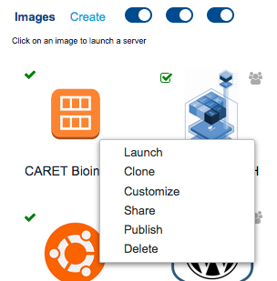
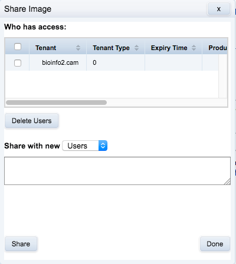

7 Collaboration
7.1 Introduction
In chapter 3 we saw how RosettaHUB’s managed images facilitate real time collaboration. We have also seen how AWS Identity and Access Management (IAM) can be used to share storage in a controlled and secure manner (chapter 4). In this chapter we will look at sharing images, formations and containers.
7.2 Sharing images
Sharing images is easy. Right click on the machine image you would like to share, and select share from the pop-up menu:

Enter the user name of the person with whom you would like to share the image:
Figure 7.1: Image context menu

Figure 7.2: Share image: add user

This is the appearance of the icon for the image on the owners console (note the grey symbol denoting sharing):
Figure 7.3: Share image: user added

Figure 7.4: Appearance of shared image icon on the owners console.

Figure 7.5: Appearance of shared image on the other user’s console.
Try sharing the CARET machine image you created with your neighbour.